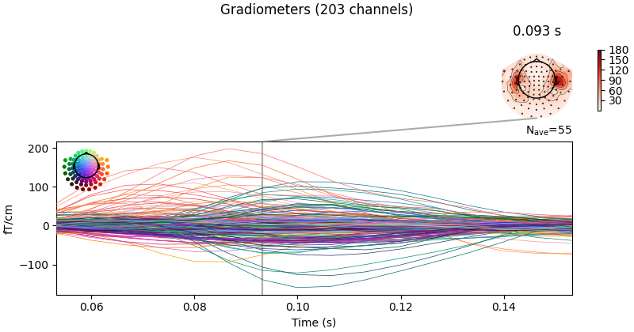
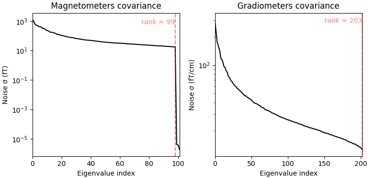
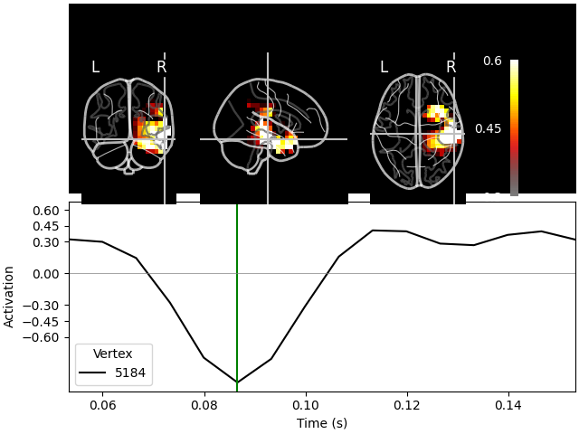

Note
Go to the end to download the full example code.
Source reconstruction using an LCMV beamformer#
This tutorial gives an overview of the beamformer method and shows how to reconstruct source activity using an LCMV beamformer.
# Authors: Britta Westner <britta.wstnr@gmail.com>
# Eric Larson <larson.eric.d@gmail.com>
#
# License: BSD-3-Clause
# Copyright the MNE-Python contributors.
import matplotlib.pyplot as plt
import mne
from mne.beamformer import apply_lcmv, make_lcmv
from mne.datasets import fetch_fsaverage, sample
Introduction to beamformers#
A beamformer is a spatial filter that reconstructs source activity by scanning through a grid of pre-defined source points and estimating activity at each of those source points independently. A set of weights is constructed for each defined source location which defines the contribution of each sensor to this source.
Beamformers are often used for their focal reconstructions and their ability to reconstruct deeper sources. They can also suppress external noise sources. The beamforming method applied in this tutorial is the linearly constrained minimum variance (LCMV) beamformer [1] operates on time series.
Frequency-resolved data can be reconstructed with the dynamic imaging of coherent sources (DICS) beamforming method [2]. As we will see in the following, the spatial filter is computed from two ingredients: the forward model solution and the covariance matrix of the data.
Data processing#
We will use the sample data set for this tutorial and reconstruct source activity on the trials with left auditory stimulation.
data_path = sample.data_path()
subjects_dir = data_path / "subjects"
meg_path = data_path / "MEG" / "sample"
raw_fname = meg_path / "sample_audvis_filt-0-40_raw.fif"
# Read the raw data
raw = mne.io.read_raw_fif(raw_fname)
raw.info["bads"] = ["MEG 2443"] # bad MEG channel
# Set up epoching
event_id = 1 # those are the trials with left-ear auditory stimuli
tmin, tmax = -0.2, 0.5
events = mne.find_events(raw)
# pick relevant channels
raw.pick(["meg", "eog"]) # pick channels of interest
# Create epochs
proj = False # already applied
epochs = mne.Epochs(
raw,
events,
event_id,
tmin,
tmax,
baseline=(None, 0),
preload=True,
proj=proj,
reject=dict(grad=4000e-13, mag=4e-12, eog=150e-6),
)
# for speed purposes, cut to a window of interest
evoked = epochs.average().crop(0.05, 0.15)
# Visualize averaged sensor space data
evoked.plot_joint()
del raw # save memory
- 
Opening raw data file /home/circleci/mne_data/MNE-sample-data/MEG/sample/sample_audvis_filt-0-40_raw.fif...
Read a total of 4 projection items:
PCA-v1 (1 x 102) idle
PCA-v2 (1 x 102) idle
PCA-v3 (1 x 102) idle
Average EEG reference (1 x 60) idle
Range : 6450 ... 48149 = 42.956 ... 320.665 secs
Ready.
Finding events on: STI 014
319 events found on stim channel STI 014
Event IDs: [ 1 2 3 4 5 32]
Not setting metadata
72 matching events found
Setting baseline interval to [-0.19979521315838786, 0.0] s
Applying baseline correction (mode: mean)
Created an SSP operator (subspace dimension = 3)
Loading data for 72 events and 106 original time points ...
Rejecting epoch based on EOG : ['EOG 061']
Rejecting epoch based on EOG : ['EOG 061']
Rejecting epoch based on EOG : ['EOG 061']
Rejecting epoch based on EOG : ['EOG 061']
Rejecting epoch based on EOG : ['EOG 061']
Rejecting epoch based on MAG : ['MEG 1711']
Rejecting epoch based on EOG : ['EOG 061']
Rejecting epoch based on EOG : ['EOG 061']
Rejecting epoch based on EOG : ['EOG 061']
Rejecting epoch based on EOG : ['EOG 061']
Rejecting epoch based on EOG : ['EOG 061']
Rejecting epoch based on EOG : ['EOG 061']
Rejecting epoch based on EOG : ['EOG 061']
Rejecting epoch based on EOG : ['EOG 061']
Rejecting epoch based on EOG : ['EOG 061']
Rejecting epoch based on EOG : ['EOG 061']
Rejecting epoch based on EOG : ['EOG 061']
17 bad epochs dropped
Created an SSP operator (subspace dimension = 3)
3 projection items activated
SSP projectors applied...
Computing the covariance matrices#
Spatial filters use the data covariance to estimate the filter weights. The data covariance matrix will be inverted during the spatial filter computation, so it is valuable to plot the covariance matrix and its eigenvalues to gauge whether matrix inversion will be possible. Also, because we want to combine different channel types (magnetometers and gradiometers), we need to account for the different amplitude scales of these channel types. To do this we will supply a noise covariance matrix to the beamformer, which will be used for whitening. The data covariance matrix should be estimated from a time window that includes the brain signal of interest, and incorporate enough samples for a stable estimate. A rule of thumb is to use more samples than there are channels in the data set; see [3][4] for more detailed advice on covariance estimation for beamformers. Here, we use a time window incorporating the expected auditory response at around 100 ms post stimulus and extend the period to account for a low number of trials (72) and low sampling rate of 150 Hz.
data_cov = mne.compute_covariance(epochs, tmin=0.01, tmax=0.25, method="empirical")
noise_cov = mne.compute_covariance(epochs, tmin=tmin, tmax=0, method="empirical")
data_cov.plot(epochs.info)
del epochs
- 
Created an SSP operator (subspace dimension = 3)
Setting small MEG eigenvalues to zero (without PCA)
Reducing data rank from 305 -> 302
Estimating covariance using EMPIRICAL
Done.
Number of samples used : 2035
[done]
Created an SSP operator (subspace dimension = 3)
Setting small MEG eigenvalues to zero (without PCA)
Reducing data rank from 305 -> 302
Estimating covariance using EMPIRICAL
Done.
Number of samples used : 1705
[done]
Computing rank from covariance with rank=None
Using tolerance 4e-14 (2.2e-16 eps * 102 dim * 1.8 max singular value)
Estimated rank (mag): 99
MAG: rank 99 computed from 102 data channels with 0 projectors
Computing rank from covariance with rank=None
Using tolerance 4.3e-13 (2.2e-16 eps * 203 dim * 9.4 max singular value)
Estimated rank (grad): 203
GRAD: rank 203 computed from 203 data channels with 0 projectors
When looking at the covariance matrix plots, we can see that our data is
slightly rank-deficient as the rank is not equal to the number of channels.
Thus, we choose to regularize the covariance matrix before inverting it
in the beamformer calculation. This can be achieved by setting the parameter
reg=0.05 when calculating the spatial filter with
make_lcmv(). This corresponds to loading the diagonal
of the covariance matrix with 5% of the sensor power. Other ways to deal with
rank-deficient covariance matrices are discussed in
[4].
The forward model#
The forward model is the other important ingredient for the computation of a
spatial filter. Here, we will load the forward model from disk; more
information on how to create a forward model can be found in this tutorial:
Head model and forward computation.
Note that beamformers are usually computed in a volume source space, because estimating only cortical surface
activation can misrepresent the data.
# Read forward model
fwd_fname = meg_path / "sample_audvis-meg-vol-7-fwd.fif"
forward = mne.read_forward_solution(fwd_fname)
Reading forward solution from /home/circleci/mne_data/MNE-sample-data/MEG/sample/sample_audvis-meg-vol-7-fwd.fif...
Reading a source space...
[done]
1 source spaces read
Desired named matrix (kind = 3523 (FIFF_MNE_FORWARD_SOLUTION_GRAD)) not available
Read MEG forward solution (3757 sources, 306 channels, free orientations)
Source spaces transformed to the forward solution coordinate frame
Handling depth bias#
The forward model solution is inherently biased toward superficial sources. When analyzing single conditions it is best to mitigate the depth bias somehow. There are several ways to do this:
mne.beamformer.make_lcmv()has adepthparameter that normalizes the forward model prior to computing the spatial filters. See the docstring for details.Unit-noise gain beamformers handle depth bias by normalizing the weights of the spatial filter. Choose this by setting
weight_norm='unit-noise-gain'.When computing the Neural activity index, the depth bias is handled by normalizing both the weights and the estimated noise (see [1]). Choose this by setting
weight_norm='nai'.
Note that when comparing conditions, the depth bias will cancel out and it is
possible to set both parameters to None.
Compute the spatial filter#
Now we can compute the spatial filter. We’ll use a unit-noise gain beamformer
to deal with depth bias, and will also optimize the orientation of the
sources such that output power is maximized.
This is achieved by setting pick_ori='max-power'.
This gives us one source estimate per source (i.e., voxel), which is known
as a scalar beamformer.
filters = make_lcmv(
evoked.info,
forward,
data_cov,
reg=0.05,
noise_cov=noise_cov,
pick_ori="max-power",
weight_norm="unit-noise-gain",
rank=None,
)
# You can save the filter for later use with:
# filters.save('filters-lcmv.h5')
Computing rank from covariance with rank=None
Using tolerance 7.1e-13 (2.2e-16 eps * 305 dim * 10 max singular value)
Estimated rank (mag + grad): 302
MEG: rank 302 computed from 305 data channels with 3 projectors
Computing rank from covariance with rank=None
Using tolerance 2.9e-13 (2.2e-16 eps * 305 dim * 4.3 max singular value)
Estimated rank (mag + grad): 302
MEG: rank 302 computed from 305 data channels with 3 projectors
Making LCMV beamformer with rank {'meg': 302}
Computing inverse operator with 305 channels.
305 out of 306 channels remain after picking
Selected 305 channels
Whitening the forward solution.
Created an SSP operator (subspace dimension = 3)
Computing rank from covariance with rank={'meg': 302}
Setting small MEG eigenvalues to zero (without PCA)
Creating the source covariance matrix
Adjusting source covariance matrix.
Computing beamformer filters for 3757 sources
Filter computation complete
It is also possible to compute a vector beamformer, which gives back three
estimates per voxel, corresponding to the three direction components of the
source. This can be achieved by setting
pick_ori='vector' and will yield a volume vector source estimate. Note that we switch the weight_norm
parameter to 'unit-noise-gain-invariant', which is only necessary for the
vector unit-noise-gain beamformer. For more in-depth detail, see
[4].
We will compute another set of filters using the vector beamformer approach:
Computing rank from covariance with rank=None
Using tolerance 7.1e-13 (2.2e-16 eps * 305 dim * 10 max singular value)
Estimated rank (mag + grad): 302
MEG: rank 302 computed from 305 data channels with 3 projectors
Computing rank from covariance with rank=None
Using tolerance 2.9e-13 (2.2e-16 eps * 305 dim * 4.3 max singular value)
Estimated rank (mag + grad): 302
MEG: rank 302 computed from 305 data channels with 3 projectors
Making LCMV beamformer with rank {'meg': 302}
Computing inverse operator with 305 channels.
305 out of 306 channels remain after picking
Selected 305 channels
Whitening the forward solution.
Created an SSP operator (subspace dimension = 3)
Computing rank from covariance with rank={'meg': 302}
Setting small MEG eigenvalues to zero (without PCA)
Creating the source covariance matrix
Adjusting source covariance matrix.
Computing beamformer filters for 3757 sources
Filter computation complete
Apply the spatial filter#
The spatial filter can be applied to different data types: raw, epochs,
evoked data or the data covariance matrix to gain a static image of power.
The function to apply the spatial filter to Evoked data is
apply_lcmv() which is
what we will use here. The other functions are
apply_lcmv_raw(),
apply_lcmv_epochs(), and
apply_lcmv_cov().
stc = apply_lcmv(evoked, filters)
stc_vec = apply_lcmv(evoked, filters_vec)
del filters, filters_vec
Visualize the reconstructed source activity#
We can visualize the source estimate in different ways, e.g. as a volume rendering, an overlay onto the MRI, or as an overlay onto a glass brain.
The plots for the scalar beamformer show brain activity in the right temporal lobe around 100 ms post stimulus. This is expected given the left-ear auditory stimulation of the experiment.
lims = [0.3, 0.45, 0.6]
kwargs = dict(
src=src,
subject="sample",
subjects_dir=subjects_dir,
initial_time=0.087,
verbose=True,
)
On MRI slices (orthoview; 2D)#
Fixing initial time: 0.087 s
Showing: t = 0.087 s, (50.7, 2.0, -13.3) mm, [18, 12, 9] vox, 5184 vertex
On MNI glass brain (orthoview; 2D)#
Transforming subject RAS (non-zero origin) -> MNI Talairach
1.022485 -0.008449 -0.036217 5.60 mm
0.071071 0.914866 0.406098 -19.82 mm
0.008756 -0.433700 1.028119 -1.55 mm
0.000000 0.000000 0.000000 1.00
Fixing initial time: 0.087 s
Showing: t = 0.087 s, (57.9, -19.7, -15.6) mm, [18, 12, 9] vox, 5184 vertex
Volumetric rendering (3D) with vectors#
These plots can also be shown using a volumetric rendering via
plot_3d(). Let’s try visualizing the
vector beamformer case. Here we get three source time courses out per voxel
(one for each component of the dipole moment: x, y, and z), which appear
as small vectors in the visualization (in the 2D plotters, only the
magnitude can be shown):
Visualize the activity of the maximum voxel with all three components#
We can also visualize all three components in the peak voxel. For this, we will first find the peak voxel and then plot the time courses of this voxel.
peak_vox, _ = stc_vec.get_peak(tmin=0.08, tmax=0.1, vert_as_index=True)
ori_labels = ["x", "y", "z"]
fig, ax = plt.subplots(1)
for ori, label in zip(stc_vec.data[peak_vox, :, :], ori_labels):
ax.plot(stc_vec.times, ori, label=f"{label} component")
ax.legend(loc="lower right")
ax.set(
title="Activity per orientation in the peak voxel",
xlabel="Time (s)",
ylabel="Amplitude (a. u.)",
)
mne.viz.utils.plt_show()
del stc_vec
Morph the output to fsaverage#
We can also use volumetric morphing to get the data to fsaverage space. This
is for example necessary when comparing activity across subjects. Here, we
will use the scalar beamformer example.
We pass a mne.SourceMorph as the src argument to
mne.VolSourceEstimate.plot. To save some computational load when applying
the morph, we will crop the stc:
fetch_fsaverage(subjects_dir) # ensure fsaverage src exists
fname_fs_src = subjects_dir / "fsaverage" / "bem" / "fsaverage-vol-5-src.fif"
src_fs = mne.read_source_spaces(fname_fs_src)
morph = mne.compute_source_morph(
src,
subject_from="sample",
src_to=src_fs,
subjects_dir=subjects_dir,
niter_sdr=[5, 5, 2],
niter_affine=[5, 5, 2],
zooms=7, # just for speed
verbose=True,
)
stc_fs = morph.apply(stc)
del stc
stc_fs.plot(
src=src_fs,
mode="stat_map",
initial_time=0.085,
subjects_dir=subjects_dir,
clim=dict(kind="value", pos_lims=lims),
verbose=True,
)
0 files missing from root.txt in /home/circleci/mne_data/MNE-sample-data/subjects
0 files missing from bem.txt in /home/circleci/mne_data/MNE-sample-data/subjects/fsaverage
Reading a source space...
[done]
1 source spaces read
Volume source space(s) present...
Loading /home/circleci/mne_data/MNE-sample-data/subjects/sample/mri/brain.mgz as "from" volume
Loading /home/circleci/mne_data/MNE-sample-data/subjects/fsaverage/mri/brain.mgz as "to" volume
Computing registration...
Reslicing to zooms=(7.0, 7.0, 7.0) for translation ...
Optimizing translation:
Optimizing level 2 [max iter: 5]
Optimizing level 1 [max iter: 5]
Optimizing level 0 [max iter: 2]
Translation: 22.7 mm
R²: 92.1%
Optimizing rigid:
Optimizing level 2 [max iter: 5]
Optimizing level 1 [max iter: 5]
Optimizing level 0 [max iter: 2]
Translation: 22.7 mm
Rotation: 19.7°
R²: 96.3%
Optimizing affine:
Optimizing level 2 [max iter: 5]
Optimizing level 1 [max iter: 5]
Optimizing level 0 [max iter: 2]
R²: 96.6%
Optimizing sdr:
R²: 98.3%
[done]
0%| | Time : 0/16 [00:00<?, ?it/s]
6%|▋ | Time : 1/16 [00:00<00:02, 7.16it/s]
12%|█▎ | Time : 2/16 [00:00<00:01, 8.17it/s]
19%|█▉ | Time : 3/16 [00:00<00:01, 8.65it/s]
25%|██▌ | Time : 4/16 [00:00<00:01, 8.90it/s]
31%|███■| Time : 5/16 [00:00<00:01, 9.11it/s]
38%|███▊ | Time : 6/16 [00:00<00:01, 9.23it/s]
44%|████■| Time : 7/16 [00:00<00:00, 9.33it/s]
50%|█████ | Time : 8/16 [00:00<00:00, 9.41it/s]
56%|█████▋ | Time : 9/16 [00:00<00:00, 9.45it/s]
62%|██████▎ | Time : 10/16 [00:01<00:00, 9.50it/s]
69%|██████▉ | Time : 11/16 [00:01<00:00, 9.54it/s]
75%|███████▌ | Time : 12/16 [00:01<00:00, 9.57it/s]
81%|████████■| Time : 13/16 [00:01<00:00, 9.61it/s]
88%|████████▊ | Time : 14/16 [00:01<00:00, 9.62it/s]
94%|█████████▍| Time : 15/16 [00:01<00:00, 9.64it/s]
100%|██████████| Time : 16/16 [00:01<00:00, 9.67it/s]
100%|██████████| Time : 16/16 [00:01<00:00, 9.58it/s]
Fixing initial time: 0.085 s
Showing: t = 0.087 s, (55.0, -25.0, -10.0) mm, [27, 18, 13] vox, 17352 vertex
References#
Total running time of the script: (0 minutes 46.417 seconds)